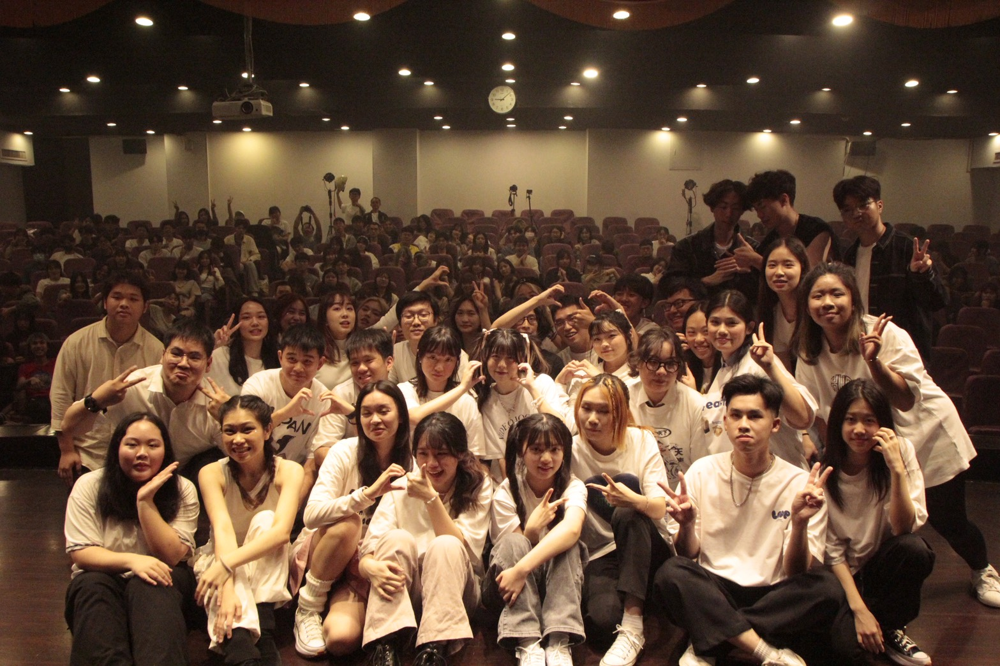
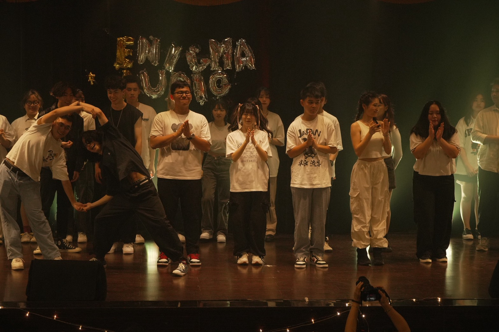
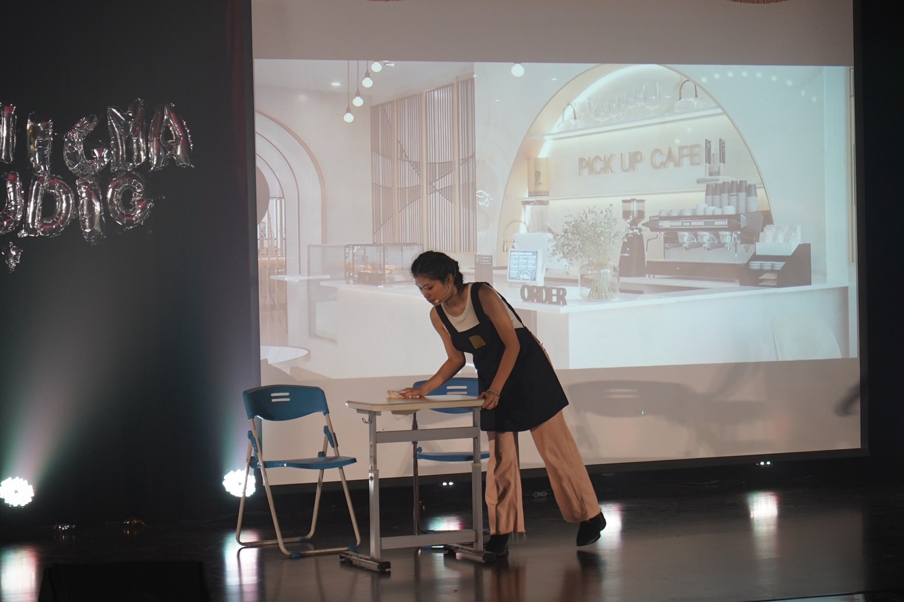
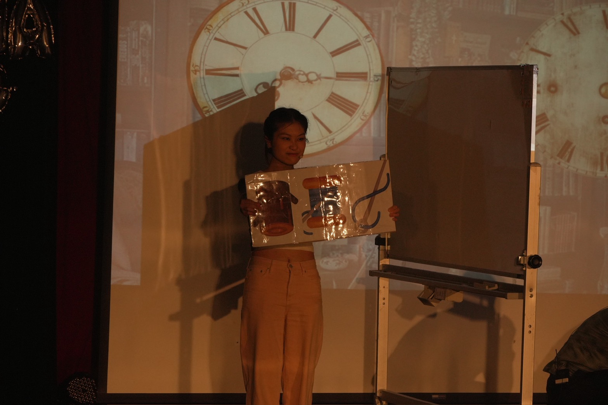
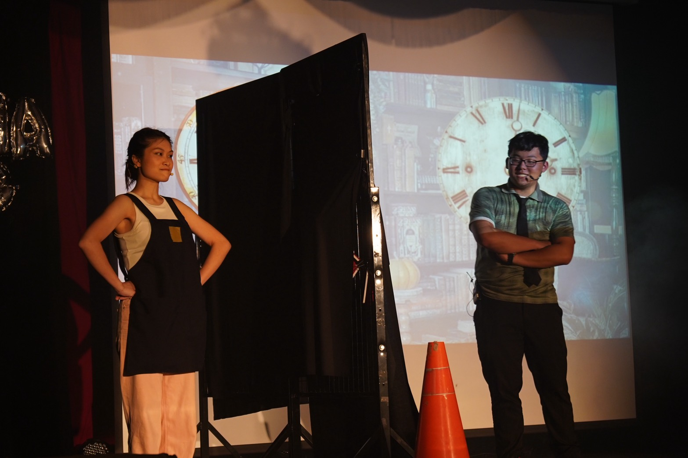
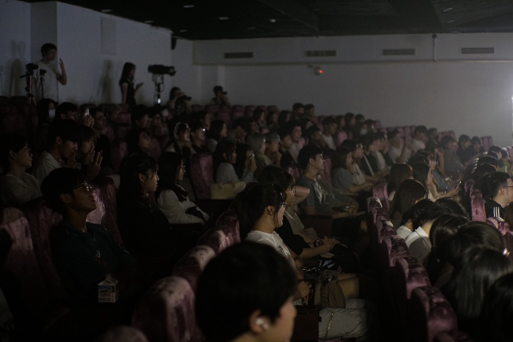
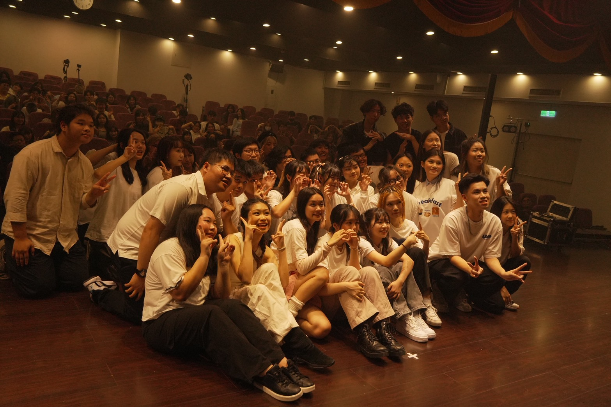
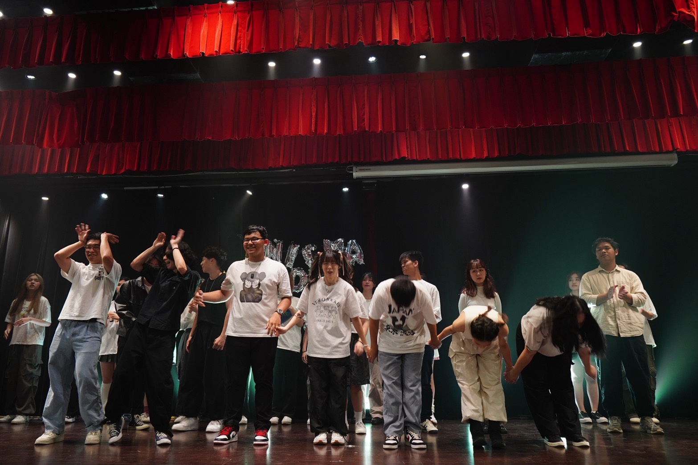

籌備師大東亞系年度大型公演，面臨資源、預算與時間的三重挑戰。
擔任戲劇統籌與編劇領導，創作具系所特色且能觸動觀眾的演出。
引領團隊產出原創劇本，設計「魔幻設定」增強舞台張力，
並負責時程規劃與預算控管，確保多層次轉場與整體演出品質。
最終吸引 200+ 名觀眾參與。
———
一間擁有魔幻設定的神秘空間，
溝通唯一的媒介，是牆上那塊巨大的黑板。
主角品儀困於情執，冠佑困於平庸。
在無聲的文字交換中，兩人逐漸解開內心的結。
品儀用衝勁點燃冠佑的熱情，
冠佑以理性拓寬品儀的愛情觀。
最終，
品儀找回自我主體性，
冠佑重新掌握人生方向，
共同印證：「人生隨時存在可能性」







